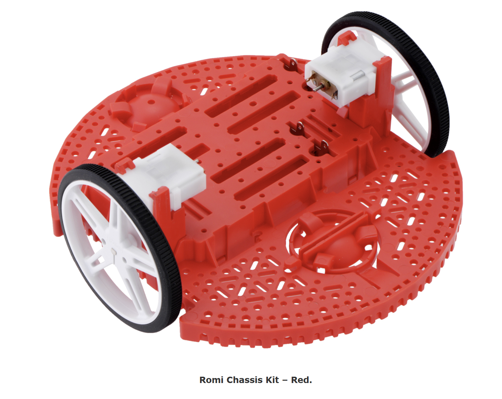
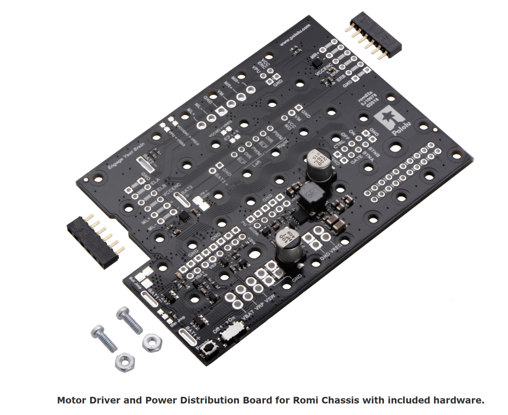
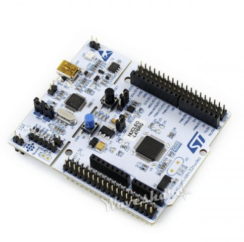
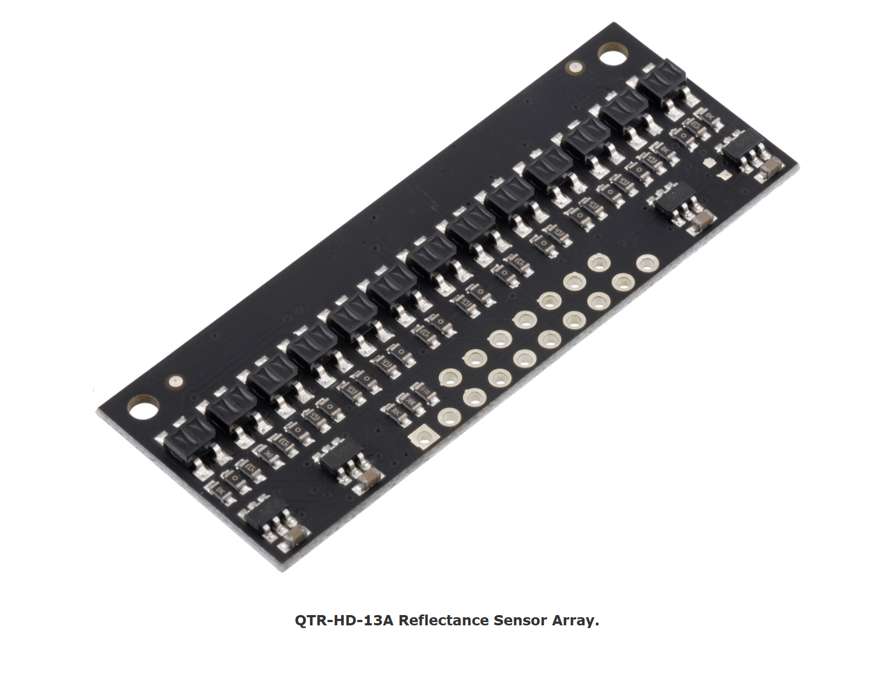
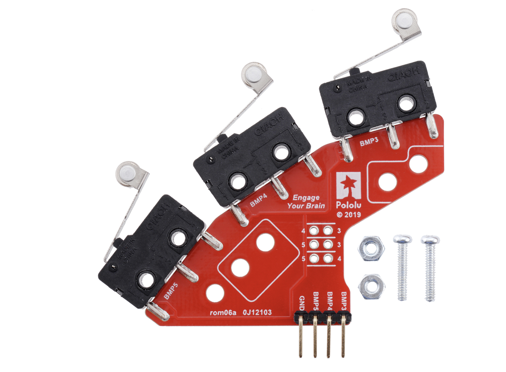
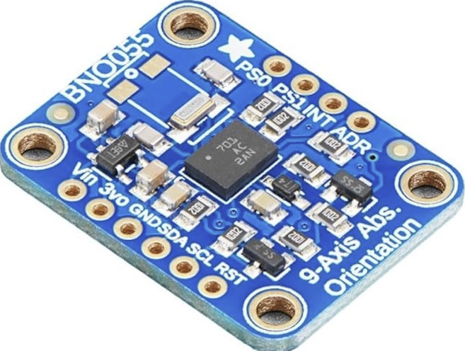
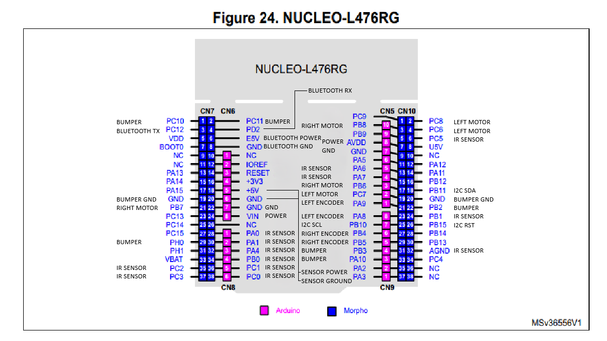

Hardware Documentation
This section details the wiring and pinout setup for the ROMI hardware.
Base Chassis
The base chassis serves as the structural foundation of the ROMI robot, providing support for all electronic and mechanical components. It is lightweight yet durable, allowing for fast movement and stable navigation on the game track. The chassis includes mounting points for sensors, the motor driver board, and the power distribution system. Its low center of gravity helps maintain balance when maneuvering sharp turns or responding to sudden control inputs.
{kind=link}
Motor Drivers
Power Distribution Board and 6x AAA Batteries Motor Control: Uses Pulse Width Modulation (PWM) signals for precise speed adjustments
{kind=link}
Processor
The STM32L476 Nucleo board acts as the brain of the ROMI robot, handling all computational tasks, sensor processing, and motor commands. It reads inputs from the line sensors, IMU, and bump sensors to make real-time navigation decisions. The processor executes control algorithms that allow the robot to autonomously navigate the game track and avoid collisions. Its multiple communication interfaces (UART, I2C, SPI) enable seamless data exchange between the various hardware components.
{kind=link}
Line Sensors
The QTR-HD-13A Reflectance Sensor Array is used for detecting the track lines and making navigation decisions. These infrared sensors measure the reflectivity of the surface beneath them, helping the robot stay within the game track boundaries. By analyzing sensor readings, the processor can adjust motor speeds to correct the robot’s direction and maintain optimal alignment with the course. This is crucial for accurate path following and minimizing time lost due to navigation errors.
{kind=link}
Bump Sensors
The bump sensors are mechanical switches that detect physical contact with obstacles or barriers. They provide immediate feedback to the processor, triggering avoidance maneuvers or recalculations in the robot’s path. These sensors are essential for ensuring the robot can interact with dynamic elements on the game track, such as walls or other robots. When a bump sensor is activated, the robot can quickly reverse, turn, or find an alternative route to stay competitive.
{kind=link}
IMU (Inertial Measurement Unit)
The BNO055 IMU provides orientation and motion sensing to keep the robot balanced and aware of its heading. It integrates an accelerometer, gyroscope, and magnetometer to track angular velocity, acceleration, and absolute position. This is critical for advanced movement strategies, such as making precise turns, stabilizing motion at high speeds, and recovering from external disturbances. The IMU ensures that the robot maintains a predictable trajectory and corrects for drift over time. - Features: 9-axis motion tracking - Usage: Position estimation, tilt correction, and motion stability
{kind=link}
Wiring/Pinouts
The wiring system connects all components, ensuring power distribution and data communication between the processor, sensors, and motors. Proper wiring is crucial for stable operation, as poor connections could lead to unreliable performance or data loss. The following diagram provides an overview of how all components are wired together, optimizing signal integrity and minimizing interference.
{kind=link}
Additional View
A top-down view of the ROMI robot, showing component placement and overall structure.

Pin Assignments
CH 7 ODD & EVEN Pin Mapping
CH 7 ODD |
Function |
CH 7 EVEN |
Function |
|---|---|---|---|
1 |
BUMP 2 |
2 |
BUMP 1 |
3 |
BLUETOOTH TX |
4 |
BLUETOOTH RX |
5 |
6 |
BLUETOOTH VIN |
|
7 |
8 |
BLUETOOTH GND |
|
9 |
NO CONNECTION |
10 |
NO CONNECTION |
11 |
SWD |
12 |
USB w/ shoe |
13 |
SWD |
14 |
USB w/ shoe |
19 |
R Bump Sensor GND |
20 |
Sensor Ground |
21 |
MOTOR Right Digital |
22 |
Ground |
24 |
Power |
26 |
NO CONNECTION |
29 |
BUMP 0 (Not used) |
30 |
|
35 |
Sensor 13 |
36 |
Sensor 9 |
37 |
Sensor 11 |
38 |
NO CONNECTION |
CH 10 ODD & EVEN Pin Mapping
CH 10 ODD |
Function |
CH 10 EVEN |
Function |
|---|---|---|---|
3 |
MOTOR Right Timer |
2 |
MOTOR Left Timer |
7 |
Power |
6 |
Sensor 1 |
9 |
Ground |
10 |
NO CONNECTION |
11 |
Onboard LED |
12 |
USB w/ shoe |
13 |
Sensor 5 |
14 |
USB w/ shoe |
15 |
Sensor 3 |
18 |
SDA |
17 |
MOTOR Right Digital |
20 |
L Bump Sensor GND |
19 |
MOTOR Left Digital |
22 |
BUMP 3 |
21 |
ENCODER Left Ch 2 |
24 |
Sensor 7 |
23 |
ENCODER Left Ch 1 |
26 |
RST |
25 |
SCL |
28 |
|
27 |
ENCODER Right Ch 1 |
30 |
|
29 |
ENCODER Right Ch 2 |
32 |
|
31 |
BUMP 4 |
34 |
|
33 |
BUMP 5 |
36 |
NO CONNECTION |
35 |
UART2 |
38 |
NO CONNECTION |
Coordinate System
Information about the coordinate system goes here.
CAD
Details about CAD models go here.
Photos
Include relevant images or photo descriptions here.